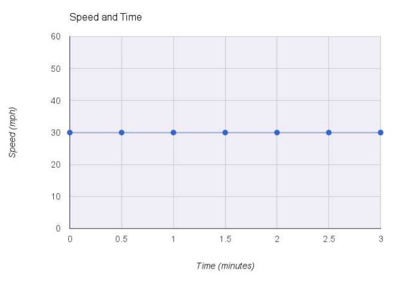
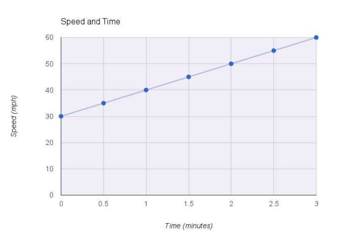

Calculus By Inspection
In Mathematics, doing things by "inspection" means doing things mentally just by looking at the problem. i.e. not calculating step by step with pen and paper.
A flat line
Let's consider an example of a car travelling at a constant speed of 30 miles per hour. We'll use 3 mathematical tools to visualize this and then establish how the car's speed changes with time.
Graph of the car's speed over time

Table showing the car's speed over time
| time (minutes) | speed (miles/hour) |
|---|---|
| 0.0 | 30 |
| 0.5 | 30 |
| 1.0 | 30 |
| 1.5 | 30 |
| 2.0 | 30 |
| 2.5 | 30 |
| 3.0 | 30 |
Equation of the car's speed over time $$s = 30 $$
Upon inspection (i.e. just by looking at the graph, table and equation), we can see that the car's speed is 30 miles/hour for all values of time i.e. it's speed doesn't change over time. To put it another way, the rate of change of speed over time is zero. Mathematically, this can be written as $${ds \over dt} = 0$$
Dependence
The derivative also indicates how one variable depends on the other variable. If the derivate is zero, it means there is no dependency between the variables and both the variables are independent of one another.
A sloped straight line and it's gradient
Let's consider another example of an accelerating car. This means the car's speed increases over time.
Graph of the car's speed over time

Table showing the car's speed over time
| time (minutes) | speed (miles/hour) |
|---|---|
| 0.0 | 30 |
| 0.5 | 35 |
| 1.0 | 40 |
| 1.5 | 45 |
| 2.0 | 50 |
| 2.5 | 55 |
| 3.0 | 60 |
Equation of the car's speed over time $$s = 30 + 10t$$
Upon inspection, we can see that the car's speed changes by +5 mph every 0.5 minute(s). Mathematically, it can be written as $${ds \over dt} = {5 \over 0.5}$$
It's always good to have a "1" in the denominator. So, we can either multiply the numerator and denominator by 2 or inspect the change in speed over 1 minute and get the rate of change of the car's speed over time as $${ds \over dt} = 10$$
Dependence
Since the derivative is not zero, there is a dependency between the variables.
Gradient
So far, we've arrived at the derivative by inspecting the graph and the table. Now, let's find out the derivative by looking at the equation. The equation of a straight line is $$y = mx + c$$ where
- m is the slope of the line
- c is the y-intercept (i.e. the starting value of y)
The mathematical term for the slope of the line is gradient. It tells us how the value of y changes as the value of x changes. We know that "rate of change" is also called derivate. Thus the derivative of a sloped line is it's gradient (it's m value/it's slope).
The equation of our sloped straight line is \(s = 30 + 10t\). Rearranging the right hand side of our equation gives us $$s = 10t + 30$$
Here- m = 10
- c = 30
Comparing this equation with the equation of a line, we can conclude that it's derivative is $${ds \over dt} = 10$$ which is the same as the result we arrived at earlier.
Let's quickly summarize what we've learned before moving on to curved lines.
Summary
- Derivative represents the rate of change of one variable with respect to the other.
- Derivative also tells us the dependence between variables.
- The derivative of a flat line is zero.
- A derivative of zero indicates independence between the variables involved.
- The derivative of a sloped straight line is a constant(non-zero), which means there is a dependence between the variables.
- It's also known as gradient, which is the slope of the line.
- Derivative = rate of change = gradient = slope.
Original Material: Make Your Own Neural Network